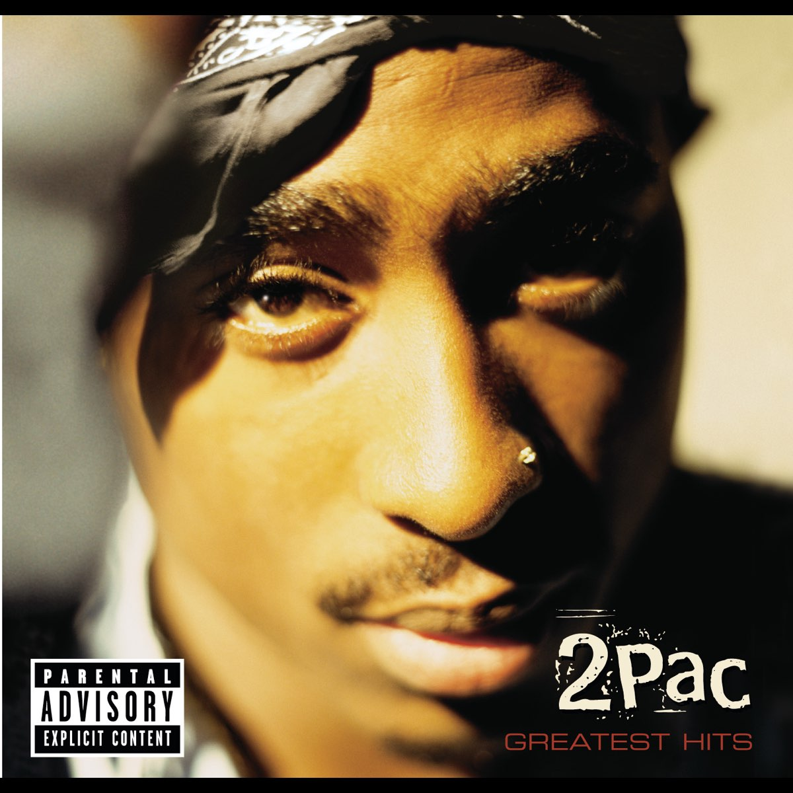

DISCOGRAFÍA
El legado musical de Tupac Shakur
"La música es el lenguaje universal que nos une a todos."
11
Álbumes de estudio
44
Singles
75M+
Discos vendidos
Explora su música
1991
2006
Álbumes de Estudio

2Pacalypse Now
1991
Interscope Records
Trapped
4:44
Brenda's Got a Baby
3:53
If My Homie Calls
4:18

Strictly 4 My N.I.G.G.A.Z...
1993
Interscope Records
Keep Ya Head Up
4:24
I Get Around
4:10
Holler If Ya Hear Me
4:38

Me Against the World
1995
Interscope Records
Dear Mama
4:40
So Many Tears
3:59
Temptations
5:00

Obra Maestra
All Eyez On Me
1996
Death Row Records
California Love
4:45
2 of Amerikaz Most Wanted
4:07
Ambitionz Az a Ridah
4:39
Álbumes Póstumos

The Don Killuminati: The 7 Day Theory
1996
Death Row Records
Hail Mary
5:12
To Live & Die in L.A.
4:33
Against All Odds
4:38

R U Still Down? (Remember Me)
1997
Jive Records
Do For Love
4:39
I Wonder If Heaven Got a Ghetto
4:09
Nothing to Lose
4:20
Until the End of Time
2001
Death Row Records
Until the End of Time
4:27
Letter 2 My Unborn
4:00
Thug N U Thug N Me
4:12

Loyal to the Game
2004
Amaru Entertainment
Ghetto Gospel
3:58
Thugs Get Lonely Too
4:47
Soldier Like Me
3:25
Compilaciones

Greatest Hits
1998
Death Row Records
Hit 'Em Up
5:12
Changes
4:29
California Love
4:45

Pac's Life
2006
Interscope Records
Pac's Life
3:48
Dumpin'
4:52
Untouchable
3:48
Canciones Más Populares
#
Título
Álbum
Reproducciones
Duración
01
California Love
feat. Dr. Dre
All Eyez On Me (1996)
1.2B
4:45
02
Changes
feat. Talent
Greatest Hits (1998)
980M
4:29
03
Dear Mama
Me Against the World (1995)
750M
4:40
04
Hit 'Em Up
feat. Outlawz
Greatest Hits (1998)
720M
5:12
05
Hail Mary
feat. Outlawz & Prince Ital Joe
The Don Killuminati (1996)
680M
5:12

California Love
feat. Dr. Dre
1.2B plays
1996

Changes
feat. Talent
980M plays
1998

Dear Mama
750M plays
1995

Hit 'Em Up
feat. Outlawz
720M plays
1998

Hail Mary
feat. Outlawz & Prince Ital Joe
680M plays
1996


No seleccionado
0:00 / 0:00

Reproducciones
Duración
Año


Estudio Virtual
Mezcla, experimenta y crea con los sonidos de Tupac
Death Row Records
Beats
70%
C
Voces
80%
C
Samples
50%
C
Master
75%
Tempo
90 BPM
Efectos
Reverb
Size
50%
Decay
50%
Mix
50%
Delay
Time
50%
Feedback
50%
Mix
50%
Filter
Freq
50%
Res
50%
Type
LP
Presets
Clásico West Coast
Emocional
Agresivo
Moderno
Tus Creaciones
Tus mezclas aparecerán aquí
Presiona el botón de grabación para empezar
Sobre el Estudio Virtual
Este estudio virtual te permite experimentar con los elementos musicales de las canciones más icónicas de Tupac Shakur. Mezcla beats, voces y samples, ajusta efectos y crea tus propias versiones.
Inspirado en los estudios de grabación donde Tupac creó su música legendaria, esta herramienta te acerca a su proceso creativo y te permite apreciar la complejidad de sus composiciones.
Nota: Este estudio virtual utiliza recreaciones y samples inspirados en la música de Tupac con fines educativos y de homenaje. Todas las creaciones son para uso personal.
Frases sobre Música
Descubre el Impacto Cultural
Explora cómo la música de Tupac Shakur transformó el hip-hop y la cultura popular